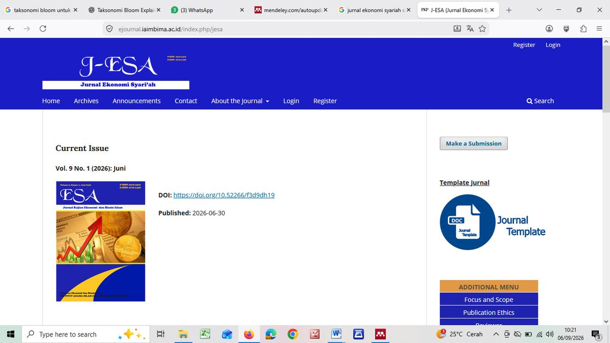

Modul 0 · Materi Kuliah
Template dan Ketentuan Jurnal J-ESA
Ketentuan teknis Jurnal Ekonomi Syari'ah IAIM Bima — dari ukuran huruf sampai gaya penulisan daftar pustaka, ditutup daftar periksa sebelum naskah dikirim.

Identitas Jurnal
| Keterangan | Isi |
|---|---|
| Nama jurnal | J-ESA: Jurnal Ekonomi Syari'ah (Jurnal Kajian Ekonomi dan Bisnis Islam) |
| Penerbit | Fakultas Ekonomi dan Bisnis Islam, Institut Agama Islam Muhammadiyah Bima |
| P-ISSN | 2579-4302 |
| E-ISSN | 2776-1428 |
| Laman | ejournal.iaimbima.ac.id/index.php/jesa |
| Terbitan terkini (per September 2026) | Vol. 9 No. 1 (2026), terbit 30 Juni 2026 |
| Surel korespondensi | jurnalesa.iaimbima@gmail.com |
| Lisensi | Open access, CC BY-SA |
Ketentuan Umum Penulisan
| Unsur | Ketentuan |
|---|---|
| Judul | Maksimum 16 kata, Bahasa Indonesia, rata tengah, Book Antiqua 12 |
| Nama penulis | Penulis pertama, kedua, ketiga (11 pt), disertai instansi dan penulis korespondensi |
| Abstrak | Maksimal 200 kata, Bahasa Indonesia/Inggris, cetak miring, Book Antiqua 11 pt, spasi 1 |
| Kata kunci | 3–5 kata |
| Huruf isi | Book Antiqua 11 pt |
| Spasi isi | 1,15 |
| Indentasi paragraf | Menjorok 1 cm |
| Margin | Atas 3 cm, bawah 3 cm, kiri 3 cm, kanan 3 cm |
| Gaya sitasi | Bodynote APA Style, dikelola dengan Mendeley atau Zotero |
| Keterangan gambar dan tabel | 10 pt |
Sistematika Naskah
- Pendahuluan — latar belakang permasalahan, isu terkait, pentingnya penelitian dan lokasinya, serta tujuan hasil penelitian.
- Tinjauan Teoritis — uraian teori dan kajian akademik yang relevan dengan tema penelitian.
- Metode Penelitian — tahapan pelaksanaan, rancangan kegiatan, ruang lingkup atau objek, bahan dan alat utama, tempat, teknik pengumpulan data, definisi operasional variabel, dan teknik analisis.
- Hasil dan Pembahasan — uraian terperinci; dapat ditampilkan dalam grafik, gambar, ataupun tabel.
- Simpulan — mengindikasikan dengan jelas hasil yang diperoleh, kelebihan dan kekurangannya, serta kemungkinan pengembangan selanjutnya.
- Daftar Pustaka — hanya memuat pustaka yang diacu, disusun menurut abjad penulis.
Format Daftar Pustaka
Baris pertama rata kiri, baris kedua dan selanjutnya menjorok ke kanan 1 cm (hanging indent), diakhiri tanpa tanda titik. Wajib menggunakan sistem perefensian Mendeley atau Zotero.
Buku
Urutan: penulis, tahun, judul buku (miring), volume, edisi, nama penerbit dan kota penerbit.
Creswell, J. W. 2016, Research design: Pendekatan Metode Kualitatif, Kuantitatif, dan Campuran. Yogyakarta: Pustaka Pelajar
Buku terjemahan
Urutan: penulis asli, tahun terjemahan, judul terjemahan (miring), volume, edisi, penerjemah, penerbit dan kota penerbit terjemahan.
Gonzales, R., P. 2004, Digital Image Processing (Pemrosesan Citra Digital), Vol. 1, Ed. 2, diterjemahkan oleh Handayani, S., Andri Offset, Yogyakarta
Artikel dalam majalah ilmiah
Urutan: penulis, tahun, judul artikel, nama majalah (miring, singkatan resmi), nomor, volume, halaman.
Rasyad Al Fajar, M. 2021., Implementasi Undang-Undang Zakat No. 23 Tahun 2011 Tentang Pengelolaan Zakat (Studi Kasus LAZISMU Kota Bima). Esa: Jurnal Ekonomi Syariah, 2 (1), 127–140
Daftar Periksa Sebelum Mengirim Naskah
- Judul tidak melebihi 16 kata dan sudah mencerminkan isi.
- Nama penulis tanpa gelar, disertai instansi dan surel korespondensi.
- Abstrak tidak melebihi 200 kata, memuat tujuan, metode, hasil, dan simpulan.
- Kata kunci 3–5 kata, dipilih dari istilah yang benar-benar sentral.
- Huruf Book Antiqua 11 pt, spasi 1,15, margin 3 cm pada keempat sisi.
- Seluruh sitasi memakai bodynote APA dan dikelola dengan Mendeley/Zotero.
- Jumlah referensi memenuhi ketentuan (minimal 20, dengan 15 artikel jurnal).
- Seluruh sumber dalam daftar pustaka benar-benar dirujuk dalam naskah, dan sebaliknya.
- Tabel dan gambar diberi nomor, judul, dan keterangan 10 pt.
- Naskah sudah dibaca ulang untuk kesalahan ketik dan konsistensi istilah.
- Naskah sudah diperiksa tingkat kemiripannya dengan aplikasi antiplagiasi.